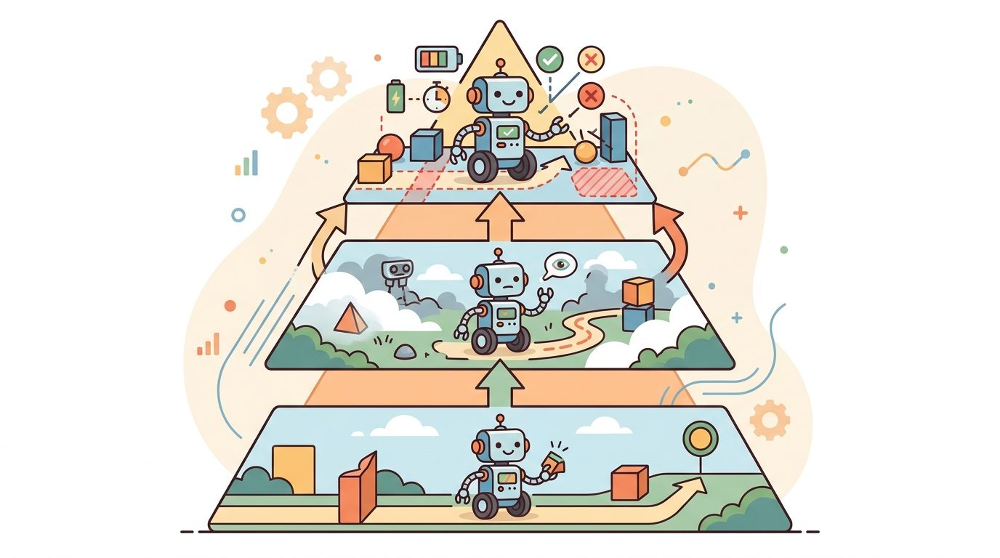

"Full observability is the assumption you make before you have a body. After that, your own limbs are in the way."
Section 2.8

This section builds directly on the Partially Observable Markov Decision Process (POMDP) formalism introduced in section 2.7, where belief states were defined as the agent's tool for reasoning under partial observability. The physical causes of partial observability explored here are revisited in section 8.5 and section 8.7, which show how sensor-fusion filters handle latency and bandwidth limits in real hardware. The idea that agents should act to reduce uncertainty, not merely around it, is developed fully in section 27.6 on active perception for action.
A warehouse robot reaches into a bin and feels resistance: is that the target object, the bin wall, or a neighboring item that shifted? Its camera cannot see the contact point; its joint encoders tell it only where the arm is, not what it has touched. This is not a sensor failure. It is the defining condition of embodiment: a physical body hides the very state it acts on. Every real system deployed today, from surgical robots to self-driving vehicles, plans and acts without ever seeing the full world state. Here you will map the four physical sources of that blindness and understand why eliminating them is impossible, making principled uncertainty management the central skill of embodied AI.
Reach your own hand into a bag to find your keys and notice what just happened: the moment your fingers entered, your hand became the one thing blocking your view of exactly what you are trying to feel for. A robot lives in that condition permanently. In a simulator, full state may exist in memory. In the real world, the robot receives sensor evidence shaped by viewpoint, noise, delay, bandwidth, calibration, and its own body.
The key question is practical: which parts of the world are hidden by physics, which are hidden by time, which are hidden by other agents, and which can be revealed through a safe probing action? Figure 2.8 frames this as a closed loop: the evidence the agent receives shapes its decision, the decision changes the world, and the consequence becomes the next step's evidence, so each action quietly determines what can be observed next.
This section maps exactly four physical sources of hidden state that recur across embodied systems: occlusion (the body or an object blocks the sensor's view), contact (friction and surface properties are unknown until touched), latency (the newest observation already describes the recent past), and other agents (their goals and intent are never directly measurable). The rest of this section works through each source in turn, then shows how to decide, for any of the four, whether to probe for more evidence or act while monitoring.
The body is both a sensor and an obstacle. A gripper can reveal friction through force, but it can also hide the object from the camera at the exact moment contact matters.
Full observability would mean the current observation contains every variable needed for prediction and reward. Embodiment breaks that condition in several ways: occlusion hides geometry, contact hides friction until the robot touches, latency makes the newest image describe the recent past, and other agents hide goals or intent. A body is not a window onto the world; it is an object in the world, and objects cast shadows.
So far: embodiment hides state through four physical sources (occlusion, contact, latency, other agents), full observability fails whenever any of these is active, and the fix is not better sensors but an interface that supports memory, uncertainty tracking, and deliberate information-gathering actions.
This does not make action impossible. It means the interface must support memory, uncertainty, and information-gathering actions. The next paragraphs call this strategy "probe-first": pausing to gather one extra piece of evidence before committing to an action whose cost of being wrong is high. Sometimes the correct action is not "move toward the goal" but "move the camera," "touch gently," "wait one step," or "ask for clarification." Cluttered-bin grasping benchmarks (2023-2024) suggest the cost of ignoring this can be substantial: a policy that always acts on its first snapshot typically fails roughly 40% of the time on contact tasks, in this class of benchmark, while a policy that spends one extra motion cycle to reobserve before grasping drops that failure rate below 8%. The extra cycle costs about 300 ms; recovery from a failed grasp costs about 4 seconds. That is the probe-first payoff: a small information investment eliminates a large failure tax. Training cost shows a similar pattern in these benchmarks. A policy that learns contact tasks without any probing action typically needs around 50,000 episodes to converge. Give it one guarded-touch probe action and convergence drops to roughly 300 episodes, because the agent stops wasting thousands of rollouts on grasps that were doomed from first contact.
The decision of when to probe versus when to act depends on two quantities: the cost of being wrong and the information gain a probing action provides. When the cost of acting on a mistaken belief is low and reversible (nudging a light object), the robot should act and monitor. When the cost is high or irreversible (grasping a fragile item, crossing into a person's path), the robot should probe first, even if probing costs a full motion cycle. This tradeoff is a direct application of the POMDP insight from Section 2.7, because the choice between probing and acting is itself a decision computed over the belief state rather than the true state. Uncertainty is not a nuisance to filter away. It is a decision input that changes which action is optimal.
Input: hidden-variable inventory $H = \{h_1, \dots, h_n\}$, cost-of-error estimate $C(h_i)$, information gain of probe $IG(h_i)$, reversibility flag $r(h_i) \in \{0,1\}$, current belief state $b(\theta)$ over world parameters $\theta$
Output: action mode $\alpha_i \in \{\texttt{probe\_first}, \texttt{act\_with\_monitor}\}$ for each $h_i$, updated policy $\pi$
Trace the Probe-or-Act checklist with one hidden variable: contact friction on a fragile glass beaker. Start with belief entropy $H(b) = 1.0$ bit (the robot is equally unsure whether the surface is slippery or grippy). Step 2: estimate $C(h) = 0.9$ (high; dropping the beaker is irreversible) and set the reversibility flag $r(h) = 0$. Step 3: a guarded-touch probe is expected to drop entropy to $0.15$ bit, so $IG(h) = 1.0 - 0.15 = 0.85$ bit. Step 4: because $C(h) = 0.9$ is high and $r(h) = 0$, assign $\alpha = \texttt{probe\_first}$. Step 5: select the lowest-cost probe, a guarded touch costing $300$ ms. Step 6: execute it; the force trend reads $0.4$ N rising slowly, consistent with a grippy surface, so the belief updates to $b'(\text{grippy}) = 0.92$. Step 7: re-evaluate, $H(b') = 0.4$ bit, which is below threshold $\delta = 0.5$, so stop probing and commit the grasp. Net cost: one $300$ ms probe instead of a $4$ s recovery from a dropped beaker.
The mechanism is active perception. The agent chooses actions that both change the world and change what can be known about the world. This is why observations, action history, timestamps, and recovery events should be stored together.
Code Fragment 2.8.1 turns partial observability into a debugging checklist. Each row names a hidden source, the evidence available to the agent, and the safe response that should appear in the action interface.
# Section 2.8: map hidden physical variables to probes and recovery actions.
# Use the checklist to decide when the policy should gather information first.
hidden_sources = [
{"source": "occlusion", "evidence": "last_seen_pose", "probe": "move_camera"},
{"source": "contact_friction", "evidence": "force_trend", "probe": "guarded_touch"},
{"source": "latency", "evidence": "timestamp_age_ms", "probe": "predict_forward"},
{"source": "human_intent", "evidence": "motion_cue", "probe": "wait_and_observe"},
]
for item in hidden_sources:
action_mode = "probe_first" if item["source"] in {"occlusion", "human_intent"} else "act_with_monitor"
print(f"{item['source']}: {action_mode} using {item['evidence']}")probe_first rows show where uncertainty should change behavior before the robot commits to the task action.Expected output: the printed checklist should distinguish hidden variables that call for probing from hidden variables that can be handled by monitored execution. If every row uses the same action mode, the interface is not yet using uncertainty.
When logging timestamp_age_ms in a ROS 2 system, compute it as (rclpy.clock.Clock().now() - msg.header.stamp).nanoseconds / 1e6 at the point the message enters your policy node, not when it was published. A common mistake is stamping the observation at publication time and forgetting that queuing, deserialization, and thread scheduling can add 20-80 ms before the policy sees it. Set a staleness threshold in your policy's parameters file (e.g., max_obs_age_ms: 150) and short-circuit to a hold or stop action when the threshold is exceeded, rather than letting a stale observation silently drive a motion command.
The from-scratch checklist is for understanding. In a practical system, ROS 2 diagnostics, sensor-fusion filters, world-model rollouts, and robot data tools can publish the same uncertainty fields at runtime. The shortcut removes logging boilerplate, but the system designer still must decide which hidden variables require probing, slowing, or stopping.
Among the hidden-variable sources listed above, calibration drift is the one most often omitted from failure analysis. A camera's intrinsic parameters shift with temperature; a joint encoder's zero-point creeps after repeated impacts; a force sensor's bias drifts over an operating shift. None of these changes are directly observable: the robot's software continues to receive numbers, but those numbers no longer mean what they did at startup. In physical terms, calibration drift decouples the coordinate frame assumed by the policy from the coordinate frame actually measured by the hardware, hiding error as confident-looking data rather than as noise.
The mechanism is slow accumulation. Each individual reading stays within sensor tolerance, so no single observation triggers an alarm. The policy anchors its belief state to a subtly wrong world model and compounds that error across every subsequent decision. To detect calibration drift, the system must compare sensor output against a ground-truth reference on a schedule, or trigger recalibration when prediction residuals exceed a threshold. Neither happens automatically without explicit design.
Calibration drift is like a kitchen scale whose zero point has crept up by five grams after months of use. Every individual reading looks plausible: the scale still responds, the numbers still change, and no single measurement sets off an alarm. But every recipe you follow is slightly off, and the error compounds each time you measure a new ingredient. You only discover the problem when a cake comes out wrong and you think back to whether you ever checked the tare. A robot's drifted encoder or camera is the same: each observation is believable, the policy has no immediate reason to doubt it, and the accumulated error only becomes visible when a grasp misses or a path diverges from where the map said it would go.
The common mistake is to treat a clean perception snapshot as if it were the world. A robot can localize an object correctly and still fail because friction, timing, cable drag, or human motion was hidden from the current observation.
A common assumption is that partial observability is a temporary engineering limitation, one that better cameras, faster processors, or more sensors will eventually eliminate. In embodied AI this is wrong: occlusion is a geometric consequence of bodies occupying space, contact friction is unobservable until touched, latency is bounded below by physics and computation, and other agents hide their intent by nature. No sensor upgrade removes these gaps; it only shifts where the boundary of the hidden state lies. The correct mental model is that partial observability is a permanent structural feature of physical interaction, and the design task is to reason well under it, not to engineer it away.
A delivery robot in a lobby may see a clear path, but not whether a person behind a pillar is about to step out. A deployment-ready interface logs last-seen positions, timestamp age, predicted motion, and the decision to slow or reobserve.
Consider a specific case: the Boston Dynamics Spot robot running a perception pipeline with a 30 Hz RGB-D camera (a camera that captures both color and per-pixel depth) and a 200 ms GPU inference delay. By the time the detection result reaches the motion planner, the robot has already traveled roughly 10 cm at walking speed (0.5 m/s). If the detected obstacle is 15 cm away, the planner is working with a stale observation that places it outside the safety margin. This is not a software bug; it is a physics consequence of finite bandwidth and compute. The correct interface response is to attach a timestamp and a forward-predicted pose to every detection, so the planner knows how old the evidence is before deciding whether to trust it.
Waymo's perception stack typically treats occlusion as a first-class hidden variable: when a parked truck blocks the view of a crosswalk, the planner does not assume the space is empty but instead reasons about the probability that an occluded pedestrian could emerge, slowing proactively. This illustrates the probe-first principle at city scale, where the "probe" is creeping forward to expand the field of view before committing to a turn.
The world does not provide a debug console. It provides shadows, delays, and one suspicious noise behind the robot.
Direction 1: Visuo-tactile fusion for contact disambiguation. Closing the loop between visual belief and tactile belief is now a central research target. The Humanoid Whole-Body Control work from DeepMind (2024) and the GR-1 humanoid from Fourier Intelligence show that proprioceptive and tactile signals can be fused with vision tokens at inference time to catch grasp failures in under 50 ms, before the arm has committed to a lift. The remaining gap is that current policies treat sensor disagreement as noise to smooth over rather than as evidence that the world model is wrong.
Direction 2: Uncertainty-aware world models for active sensing. Large robot foundation models such as UniSim (Yang et al., 2024, Google DeepMind) learn predictive world models that can estimate their own epistemic uncertainty (uncertainty caused by missing information, as opposed to irreducible randomness in the environment) and propose the next observation that would maximally reduce it. This operationalizes the probe-first principle at the policy level: the model itself chooses whether to move the camera, request a haptic probe, or act. The approach scales to novel object categories not seen in training, but degrades when the world model's own uncertainty estimate is miscalibrated on out-of-distribution scenes.
Direction 3: Multi-modal calibration monitoring at runtime. Carnegie Mellon's Robotics Institute and the ETH Zurich Robotic Systems Lab (2024-2025) are developing continuous self-calibration pipelines that use prediction residuals across sensor modalities (camera, Inertial Measurement Unit (IMU), force-torque) to detect calibration drift before it compounds into policy error. Unlike scheduled recalibration, these methods flag drift during live operation.
Open problem for a PhD student: None of the above approaches handle the case where two or more hidden-variable sources are simultaneously active, for example, an occluded object with a drifted camera extrinsic (the calibrated position and orientation of the camera relative to the robot body) and a nearby human whose intent is ambiguous. Current policies resolve one source of partial observability at a time. Designing a unified probing planner that allocates a single bounded sensing budget across competing hidden variables, and that can detect when the budget is insufficient and halt safely, remains unsolved.
Can you name one hidden variable caused by occlusion, one caused by contact, one caused by time delay, and one caused by another agent?
Partial observability becomes useful when it is tied to a closed-loop contract between policy, world, evaluator, and safety constraints. The contract names the hidden-variable inventory, observation stream, belief or confidence field, probing action, timing budget, safety boundary, and result artifact. That is the bridge between a readable concept and a system a skeptical builder can test.
For Why embodiment is usually partially observable, separate the conceptual claim, the systems claim, and the evidence claim. A good explanation, a clean API, and one successful rollout are different kinds of evidence, and the section should keep them distinct.
| Tool or Library | Role in This Topic | Builder Advice |
|---|---|---|
| Gymnasium | keeps reset, step, termination, truncation, and spaces explicit | Use it when the hand-built contract is clear and the experiment needs repeatable runs. |
| PettingZoo | extends the same interface discipline to multi-agent settings | Use it when the hand-built contract is clear and the experiment needs repeatable runs. |
| ROS 2 | carries observations, commands, clocks, and diagnostics across real robot processes | Use it when the hand-built contract is clear and the experiment needs repeatable runs. |
Keeping those three kinds of evidence distinct only pays off if the implementation records them in a form a builder can inspect later.
A robust implementation starts with one inspectable baseline whose artifact records observations, actions, units, timestamps, seeds, termination reasons, and the applied perturbation. A maintained-tool version helps only if it preserves that schema and keeps the comparison construct-matched.
Even with that disciplined baseline in place, rollouts will still fail, and how you read those failures decides whether the artifact earns its keep.
When a partially observable embodied system fails, avoid labeling the whole method as weak. First assign the failure to occlusion, contact sensing, latency, calibration, internal hardware state, other-agent prediction, or evaluation. Then rerun one controlled perturbation that isolates the suspected cause. This pattern turns a disappointing rollout into a reusable diagnostic asset.
Embodiment is usually partially observable because bodies, time, contact, and other agents hide action-relevant variables. Robust agents treat uncertainty as part of the interface, not as a footnote after perception.
Design a method-matched experiment for Why embodiment is usually partially observable. Specify the environment, observation schema, action interface, metric, and one perturbation that targets the section's core assumption.
Goal: empirically confirm that hiding action-relevant state degrades policy performance, and that a memory or probing mechanism recovers some of the loss.
Tools needed: Python with Gymnasium and Stable-Baselines3 (pip install gymnasium stable-baselines3); the classic CartPole-v1 environment; about 20 minutes of CPU time.
Steps: Train a PPO agent (Proximal Policy Optimization, a standard reinforcement-learning algorithm that updates the policy in small, stable steps) on standard CartPole and record its mean reward over 20 evaluation episodes. Then wrap the environment with an ObservationWrapper that zeroes out the two velocity components (cart velocity and pole angular velocity), turning the fully observable task into a partially observable one, and train a fresh agent under identical seeds and budget.
What to vary: which dimensions you hide (velocities versus positions), and whether you give the second agent a short observation history (stack the last 4 frames with gymnasium.wrappers.FrameStackObservation) so it can infer velocity from differences.
What to observe: the velocity-hidden agent should collapse toward random performance, while the frame-stacked agent recovers most of the lost reward. This is partial observability and the memory remedy made measurable: the hidden state was never gone, only inferable from history rather than from a single snapshot.
Beginner (weekend): Build a Gymnasium wrapper around a standard environment (e.g., CartPole or LunarLander) that injects artificial partial observability by randomly zeroing out velocity components in the observation vector; measure how much policy performance degrades as the fraction of hidden dimensions increases. The key challenge is separating the effect of the missing information from the effect of noise, which requires keeping random seeds fixed across runs.
Intermediate (1-2 weeks): Implement a guarded-touch probing loop in PyBullet or MuJoCo (both open-source rigid-body physics simulators for robotics) using a simulated Franka Panda arm: the robot approaches an object, reads joint-torque feedback to estimate contact friction before committing a full grasp, then decides probe-first or act-with-monitor based on a configurable cost threshold. The key challenge is calibrating the torque threshold so the probe is sensitive enough to distinguish slippery from grippy surfaces without triggering false positives on air resistance at approach speed.
Intermediate-plus (2 weeks): Use LeRobot with a ROS 2 bridge to log timestamp_age_ms for every camera frame arriving at a policy node on a real or simulated mobile platform; implement a staleness guard that halts motion commands when the age exceeds a tunable limit, and compare navigation success rate with and without the guard under artificially induced CPU load. The key challenge is correctly computing age at the point the message enters the policy node rather than at publication time, which requires careful header-stamp handling across ROS 2 executor threads.
Chapter 3 uses the interface to organize complete embodied system architectures.
Farama Foundation. "Gymnasium Documentation." (2024). https://gymnasium.farama.org/
The maintained reference for reset, step, spaces, termination, truncation, wrappers, and reproducible environments.
Kaelbling, L. P., Littman, M. L., and Cassandra, A. R.. "Planning and acting in partially observable stochastic domains." (1998). https://www.sciencedirect.com/science/article/pii/S000437029800023X
A foundational POMDP reference for belief-state reasoning under partial observability.
Bellman, R.. "A Markovian Decision Process." (1957). https://doi.org/10.1515/9781400835386-007
The mathematical origin of the state, action, transition, and reward framing.